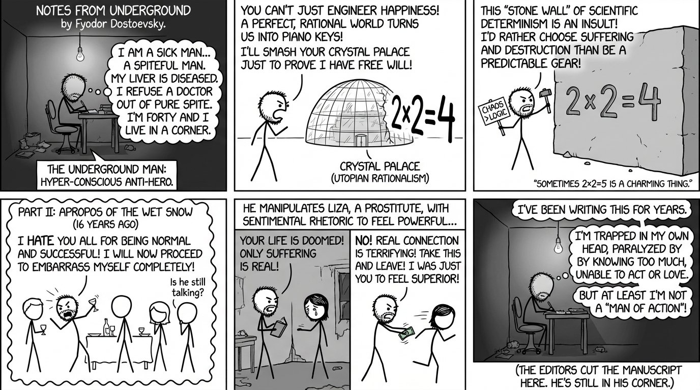

isbn-13: 9780802845702
Audible
AI Generated Content
Generated by gemini-3-pro-preview

Published in 1864, Notes from Underground stands as a seminal work in the canon of existentialist literature and serves as a prelude to Fyodor Dostoevsky’s later, larger novels. The edition identified by ISBN 9780802845702 typically refers to the translation by Richard Pevear and Larissa Volokhonsky, which preserves the jagged, erratic, and distinctive voice of the protagonist. The novella is structured as a fictional memoir written by a retired civil servant living in St. Petersburg. Known only as the “Underground Man,” this narrator is an unnamed, forty-year-old anti-hero who represents a radical rejection of the rationalism and utopian socialism prevalent in mid-19th-century Russia.
The narrative is strictly divided into two sections: “Underground” and “Apropos of the Wet Snow.” The first part serves as a philosophical monologue in which the narrator introduces his worldview. He famously opens with the declaration, “I am a sick man… I am a spiteful man. I am an unpleasant man. I think my liver is diseased.” He refuses medical treatment out of sheer spite, establishing immediately that his actions are not governed by logic or self-interest, but by a chaotic need to assert agency.
In “Underground,” the narrator attacks the concept of “rational egoism” and the idea of the “Crystal Palace”—a metaphor for a utopian society founded on reason and mathematical precision, derived from Nikolay Chernyshevsky’s novel What Is to Be Done?. The Underground Man argues that a perfectly rational world reduces human beings to “piano keys” or “organ stops,” functioning only according to the laws of nature. He posits that humanity values free will above happiness or material advantage. To the Underground Man, the “stone wall” of scientific determinism (symbolized by the equation 2 x 2 = 4) is an insult to human consciousness. He states, “Twice two makes four seems to me simply a piece of insolence. Twice two makes four is a pert coxcomb who stands with arms akimbo barring your path and spitting.” He concludes that man would deliberately choose chaos and destruction simply to prove he is not a gear in a machine.
The second part, “Apropos of the Wet Snow,” shifts from philosophy to narrative, recounting events from sixteen years prior when the narrator was twenty-four. This section serves as a practical demonstration of the theories espoused in Part I. The narrative follows the Underground Man through a series of humiliating social interactions. He obsesses over an officer who physically moves him out of the way in a tavern, treating him as if he were an inanimate object. The narrator spends weeks plotting a “revenge” that consists merely of bumping into the officer on the Nevsky Prospect, an act that goes largely unnoticed by the officer but which the narrator views as a moral victory.
Following this, the narrator invites himself to a farewell dinner for Zverkov, an old school acquaintance whom he loathes for his success and popularity. At the dinner, the Underground Man behaves erratically, insults the guests, paces the room, and drinks excessively, resulting in total social ostracization. In a drunken rage, he pursues the group to a brothel, intending to slap Zverkov, but finds them gone. Instead, he encounters Liza, a young prostitute.
The interaction with Liza forms the emotional climax of the book. The Underground Man manipulates Liza by describing a grim, hopeless future for her, employing sentimental rhetoric to break her spirit and make her realize her degradation. He succeeds in reducing her to tears, posing as her potential savior before leaving her his address. When Liza visits his apartment days later, expecting the heroic figure he pretended to be, she finds him in a state of poverty and domestic squalor. Ashamed and enraged, he lashes out at her, confessing that his previous kindness was merely a power trip designed to humiliate her to compensate for his own humiliation at the dinner. He tells her, “I had been humiliated, so I wanted to humiliate; I had been treated like a rag, so I wanted to show my power.” Despite his cruelty, Liza responds with compassion. Unable to accept this genuine connection, he thrusts money into her hand—treating her strictly as a prostitute—and she flees. He later finds she threw the money away. The memoir ends with the narrator noting that he has continued writing these notes for years, but the “editors” of the manuscript choose to cut the text off there, determining that enough has been said.
The character development of the Underground Man is characterized by a paradox: he is static in his inertia but volatile in his emotions. He defines himself by his “hyper-consciousness,” which he views as a disease. This acute awareness paralyzes him; he cannot become a hero or an insect, a scoundrel or an honest man. He is trapped in a cycle of self-loathing and superiority. He views himself as more intelligent than the “men of action” who surround him, yet he envies their stupidity because it allows them to live and act decisively. His development is a regression into deeper isolation; the flashback in Part II shows he once attempted social contact, while the narrator of Part I has fully retreated into his “corner.”
The central theme of the text is the conflict between free will and determinism. Dostoevsky utilizes the Underground Man to explore the consequences of a purely materialist worldview. If science can explain every human action, then moral responsibility ceases to exist. The Underground Man rebels against this by championing suffering. He argues that suffering is the sole origin of consciousness and that removing it—as utopian rationalists propose—would dehumanize society. “I agree that two times two makes four is an excellent thing; but if we are going to praise everything, then two times two makes five is sometimes also a very charming little thing.”
Another prevalent theme is the artificiality of the Russian intelligentsia of the time, whom Dostoevsky critiques for being disconnected from “living life.” The Underground Man admits he is a “bookish” man, unable to interact with reality without filtering it through literature and European philosophy. His tragedy lies in his inability to love or connect with another human being (Liza) because he views relationships only as a struggle for dominance. The book ultimately presents a critique of reason disconnected from moral and spiritual grounding, suggesting that total freedom without faith or love leads only to inertia and spite.